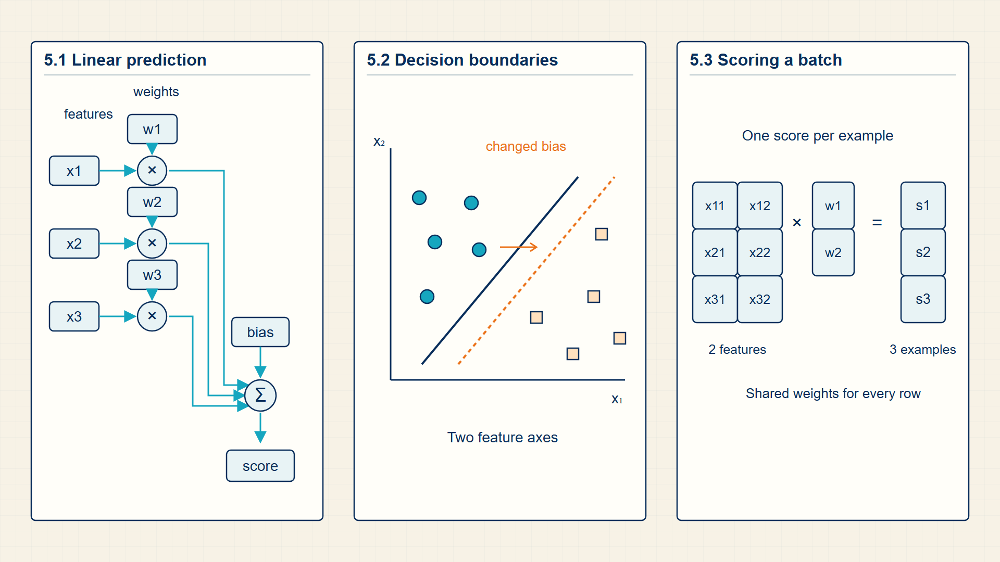
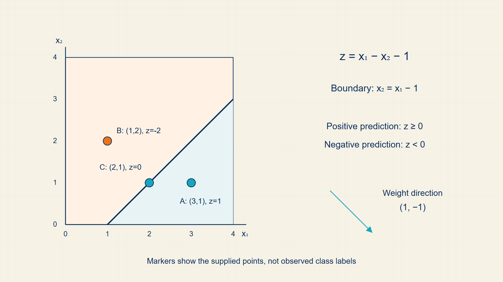
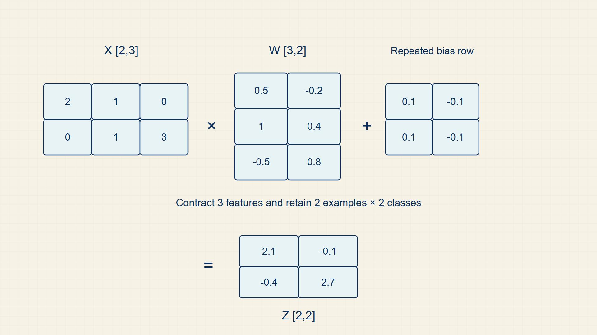

5 Linear Hyperplanes: Scoring Features with Matrix Math
A linear model starts by combining input features with learned weights and a bias. That single calculation produces either a numeric prediction or a score for a later classifier.
Linear regression and classification use the same affine calculation: multiply features by learned weights, then add a bias. The meaning of the result changes with the task, from a numeric estimate to class evidence.
In code, NumPy supports small array calculations, while torch.matmul and torch.nn.Linear implement the affine score on differentiable tensors.
Chapter 5 develops one required stage of the guide’s computation.

The numbered panels correspond to the chapter sections and show how each local result supplies the next operation.
5.1 Estimating Numeric Values with Linear Regression
Linear regression predicts a numeric target with the affine score \(w^\top x+b\) and measures the remaining discrepancy with a regression loss.
- Weight vector: A trainable coefficient for each input feature.
- Bias: A trainable offset independent of the input features.
- Residual: The difference between the target and the prediction.
The affine score is the shared mathematical starting point for regression and classification. Classification adds a probability interpretation to that score.
For one example, the dot product pairs every feature with its coefficient and the bias shifts the result independently of the features. The residual retains both direction and magnitude: a positive residual means the target lies above the prediction.
Mean squared error squares each residual before averaging, so positive and negative errors cannot cancel and larger misses receive greater weight. Backpropagation differentiates this scalar average with respect to the same weights and bias used in the prediction.
The same batch matrix operation later produces class logits; only the target interpretation and loss function change.
The dot product combines feature values with weights; the bias shifts the prediction.
Linear prediction:
\[ \hat{y}=w^\top x+b \tag{5.1}\]
where x is feature vector; w is weight vector with the same feature dimension; b is scalar bias.
the dot product is the first trainable score; later probability functions reinterpret this score as a logit.
A residual is the signed prediction error.
Residual:
\[ r_i=y_i-\hat{y}_i \tag{5.2}\]
MSE penalizes large residuals quadratically.
Mean squared error:
\[ L_{\mathrm{MSE}}=\frac{1}{n}\sum_i(y_i-\hat{y}_i)^2 \tag{5.3}\]
Example: A linear prediction and its squared error
Use one two-feature example and carry the same prediction through the residual and loss.
Prediction:
\(x = (2,-1), w = (0.5,3), b = 1\)
\(\hat{y} = w^{T} x + b = 0.5(2) + 3(-1) + 1 = -1\)
Residual:
Let the target be \(y = 3\).
\(r = y - \hat{y} = 3 - (-1) = 4\)
Squared error:
\(r^{2} = 4^{2} = 16\)
For a one-example batch, the mean squared error is also 16.
The prediction, residual, and loss now refer to the same input and target.
Regression makes the affine computation visible: weighted features plus a bias yield one numeric prediction. Classification uses the same computation to create a score before applying a probability rule.
5.2 Separating Classes with Linear Decision Boundaries
Logistic regression starts with a linear score. The model multiplies input features by learned weights, adds a bias, and treats the resulting score as evidence for a class.
- Weight: A learned coefficient that controls how strongly one feature affects the score.
- Logit: An unnormalized score before sigmoid or softmax normalization.
- Decision boundary: The set of inputs where the model is indifferent between classes.
For a binary classifier, the score \(z = w^{T} x + b\) is positive on one side of the boundary and negative on the other. The boundary is linear in the feature space even though the output probability is nonlinear.
The same score vocabulary reappears in LLM inference. A transformer decoder outputs logits over vocabulary tokens; sampling turns those logits into a next-token choice.
For classification, the same affine expression is called a score or logit. The sign or largest score determines the class before probability calibration is introduced.
The sign of the linear score \(w^\top x+b\) determines the side of the decision boundary. The weight vector sets the boundary’s orientation, and the bias moves it without changing that orientation.
Logistic regression does not change this geometry. Sigmoid converts the signed distance-like score into a probability, and cross-entropy changes the weights and bias so positive and negative examples move toward the appropriate sides.
The score z is the scalar input to sigmoid in binary logistic regression.
Affine score:
\[ z=w^\top x+b \tag{5.4}\]
where w is classifier weight vector; x is feature vector; b is bias.
A linear classifier first assigns a signed score by projecting the feature vector onto the weight direction and shifting by the bias.
z is not yet a probability; sigmoid or softmax supplies that interpretation.
The boundary is the set of feature vectors where the two binary decisions tie.
Linear decision boundary:
\[ \{x\mid w^\top x+b=0\} \tag{5.5}\]
Decision boundary:
\[ w^\top x+b=0 \tag{5.6}\]
where w is weight vector; x is feature vector; b is bias.
The boundary is the set of inputs whose affine score equals the classification threshold zero.
Changing weights or bias moves the boundary through feature space.
Example: Two points on opposite sides of one decision boundary
Use weights \(w=(1,-1)\) and bias \(b=-1\), so the boundary is \(x_1-x_2-1=0\).
First point:
\(x_{A} = (3,1)\)
\(z_{A} = 3 - 1 - 1 = 1\)
The positive score places the point on the positive side of the boundary.
Second point:
\(x_{B} = (1,2)\)
\(z_{B} = 1 - 2 - 1 = -2\)
The negative score places the point on the negative side.
Boundary check:
\(x_{C} = (2,1)\)
\(z_{C} = 2 - 1 - 1 = 0\)
A zero score places the point on the boundary itself.
The sign of one linear score \(w^\top x+b\) separates the two classes.
A linear classifier separates inputs by comparing their affine scores. Multi-class models compute several scores together through the same matrix multiplication used for batches.
5.3 Batching Forward Passes via Matrix Multiplication
Batch matrix form applies the same linear rule to many examples at once.
- Batch matrix: A stack of examples processed together.
- Score vector: One scalar score per example for binary classification or regression.
The single-example score uses one feature vector and one weight vector. In a batch, the feature vectors are stacked as rows of a matrix, and matrix multiplication computes every row’s score in one operation.
This is the first place where dimension checking becomes a mathematical requirement rather than a PyTorch detail. The feature dimension of the batch matrix must match the weight dimension; otherwise the multiplication is undefined before any code runs.
The same three-example batch continues through Chapters 5-11. Its rows are \(x_{1}=(1,0)\), \(x_{2}=(0,1)\), and \(x_{3}=(1,1)\) with binary targets (1,0,1). Using \(w=(0.8,-0.3)\) and \(b=0.1\) produces logits (0.9,-0.2,0.6). Later sections turn these logits into probabilities, losses, and gradients instead of changing the example at every formula.
For X in \(\mathbb{R}^{B \times d}\) and w in \(\mathbb{R}^{d}\), the result z has dimensions \(\mathbb{R}^{B}\).
Batch scores:
\[ z=Xw+b \tag{5.7}\]
where X is batch matrix with B rows; w is weight vector; z is one score per row.
batch matrix multiplication applies the same linear rule to every example.
Example: The running three-example classification batch
Stack the three inputs as rows and apply one affine rule to all rows.
Inputs:
\(X = [[1,0], [0,1], [1,1]], y = [1,0,1]\)
Parameters:
\(w = [0.8,-0.3], b = 0.1\)
Batch scores:
\(z = Xw + b = [0.9,-0.2,0.6]\)
Dimensions:
X: 3 x 2
w: 2
z: 3
y: 3
One matrix-vector product now supplies the logits used by probability, loss, and gradient calculations.
Code example: The running batch from features to logits
import torch
X = torch.tensor([[1.0, 0.0], [0.0, 1.0], [1.0, 1.0]])
y = torch.tensor([1.0, 0.0, 1.0])
w = torch.tensor([0.8, -0.3], requires_grad=True)
b = torch.tensor(0.1, requires_grad=True)
logits = X @ w + b
print(logits) # tensor([ 0.9000, -0.2000, 0.6000])The printed logits match the hand calculation and preserve one score per input row.
This is a fixed parameter example; optimization is introduced in Chapter 10.
Matrix multiplication applies the same learned rule to every example in the batch. The output scores become probabilities only after a suitable binary or multi-class transformation.
5.4 Logistic-regression update trace
Logistic regression is the first complete trainable model in the course. The model begins with a geometric object: a line or hyperplane where x @ w + \(b = 0\). Points on one side have positive logits and points on the other side have negative logits. The sigmoid then turns the signed score into a probability, but the trainable object is still the affine score.
The important derivative is \(\partial L/\partial z=p-y\). If the model assigns \(p=0.95\) to an example whose label is \(y=0\), the error signal is large and positive, so the update pushes the logit down. If \(p\) is already close to \(y\), the signal is small. This is the first place where probability, loss, and gradient become one computation.
Logistic regression begins as geometry: a learned affine score divides feature space into two decision regions.

The boundary is the set of feature values where the affine score is zero. Training changes the weights and bias so this boundary moves.
Linear regression and linear classification become batch computations when single-example scores are written in matrix form.

The slide anchors the dimension trace: features become columns, weights align with those columns, and the dot product produces a score.
Logistic regression composes the batch score \(Xw+b\), sigmoid probability, cross-entropy loss, and gradient update. For binary batches, X is [B,D], weights are [D,1], logits and labels are [B,1], and loss is scalar. Matrix multiplication creates logits, sigmoid gives probabilities, BCE compares labels, and gradients return to weights and bias.
In PyTorch, nn.Linear(D,1) and binary_cross_entropy_with_logits implement the stable forward path; loss.backward() fills gradients.
Performance note: For small models the bottleneck is usually Python overhead and data movement; for large batches it is matrix multiplication throughput.
Example: Complete logistic regression step
Forward pass:
\(z = x \cdot w + b = 2 \cdot 0.5 + (-1) \cdot (-0.3) + 0.1 = 1.0 + 0.3 + 0.1 = 1.4\)
\(p = \operatorname{sigmoid}(1.4) = 1 / (1 + \exp(-1.4)) = \frac{1}{1 + 0.247} = 0.803\)
Loss for the positive example:
\(L = -\log(p) = -\log(0.803) = 0.219\)
Gradient: \(\frac{dL}{dz} = p - y = 0.803 - 1.0 = -0.197\)
(Negative: z should increase — model was under-confident about the positive class.)
Gradients for weights: \(\frac{dL}{dw} = \frac{dL}{dz} \cdot x = -0.197 \cdot [2, -1] = [-0.394, 0.197]\)
Gradient for bias: \(\frac{dL}{db} = \frac{dL}{dz} \cdot 1 = -0.197\)
SGD update:
\(w_{new} = [0.5, -0.3] - 0.1 \cdot [-0.394, 0.197] = [0.539, -0.320]\)
\(b_{new} = 0.1 - 0.1 \cdot (-0.197) = 0.120\)
After one step, the logit for this example is slightly higher, pushing p closer to 1.
Key calculations
Binary logit:
\[ z=x\mathbin{@}w+b \tag{5.8}\]
Sigmoid:
\[ p=\frac{1}{1+\exp(-z)} \tag{5.9}\]
Binary cross-entropy:
\[ L=-y\log(p)-(1-y)\log(1-p) \tag{5.10}\]
Dimension trace
These dimensions appear in the computation in order.
- X: [B, D], a batch of B examples with D features.
- w: [D, 1], one learned coefficient per feature.
- b: [1], broadcast across the batch.
- z: [B, 1], one logit per example.
- p: [B, 1], one probability per example after sigmoid.
PyTorch implementation notes
- nn.Linear(D, 1) stores the weight and bias and applies the affine map to the whole batch.
- BCEWithLogitsLoss should receive raw logits, not sigmoid probabilities.
- The decision rule logits > 0 is equivalent to sigmoid(logits) > 0.5.
It should now be clear how to calculate one logit, one sigmoid value, one BCE value, and the sign of the gradient update.
Linear models teach the affine score that later becomes the logit used by classifiers and language models.
Probability transforms make scores usable by losses and decoding rules.